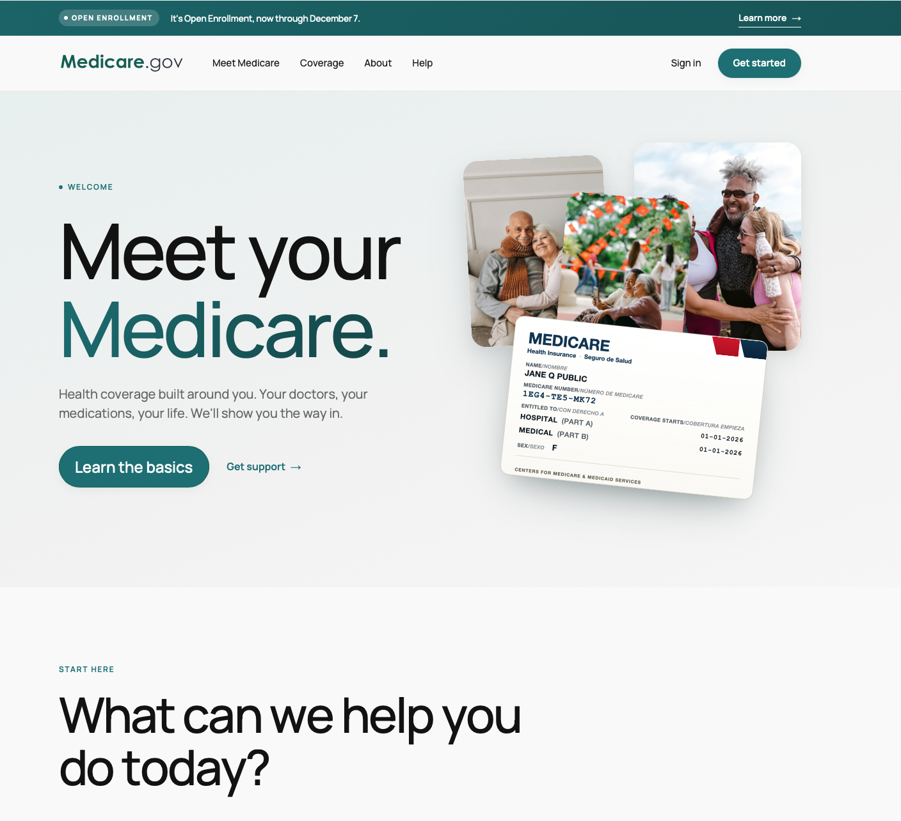

Medicare
Service design · Guided experience · Interactive prototype
A clearer way in
I was recruited by the National Design Studio to work on Medicare alongside an amazing group of people. Together, we took on a deceptively simple challenge: make getting started feel understandable.
We reduced a journey of 30-plus steps to five questions. Instead of asking people to learn the system before they could use it, we built the experience around their situation and what they needed to do next.
Less process. More clarity.
The work was about simplifying the path, not the importance of the decisions. Plain language, focused questions, and a visible record of previous answers helped turn a complicated process into a guided conversation.
The five-question idea became the organizing principle. The detailed prototype below also includes follow-up questions, optional help, and sample comparisons, so you can explore how the experience responds.
Try the guided experience
Answer the questions, change a decision, and see your route take shape.
Portfolio prototype with sample plans, prices, and guidance—not medical, insurance, or enrollment advice. Please use fictional answers. No application is submitted.
Scroll inside the prototype to explore. Open full screen for a larger workspace. The contextual guide uses scripted sample responses; it is not a live AI service.
Make the next step obvious
Start with the person
Timing, existing coverage, and personal priorities shape the route. The interface asks for context before presenting choices, so people have a reason for each decision.
Keep the reasoning visible
Answers stay on the page and can be changed. Comparisons explain trade-offs, optional help stays beside the question, and the final route brings the next actions together.
